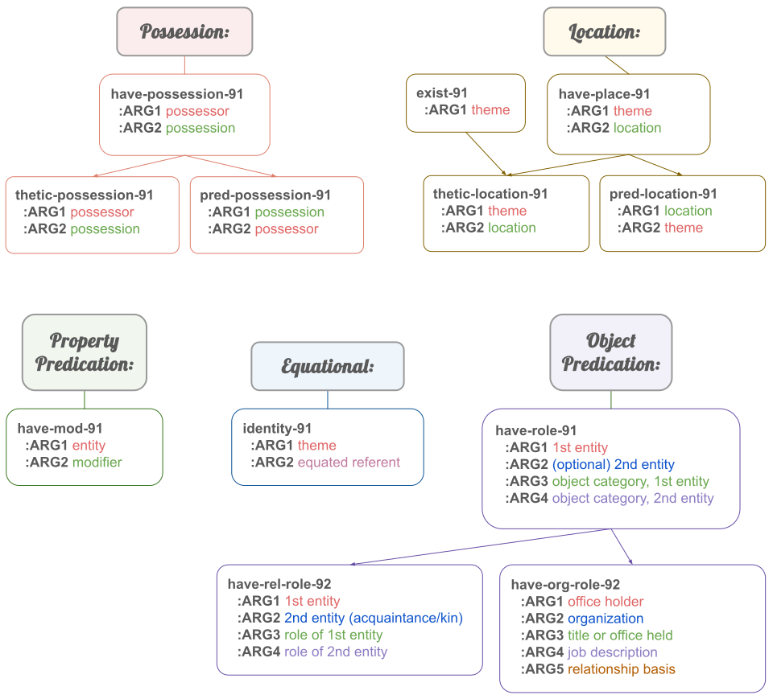

These rolesets cover several semantic categories whose predication is often expressed non-prototypically across many languages (via copular expressions, juxtaposition, etc.). For possession and location, many languages distinguish thetic from predicational expressions of information status (meaning they distinguish which arguments are new or old information). These categories are arranged into lattices so that users may choose whether or not to annotate this level of detail.
(Current as of June 2025.)
Note: it is always possible that lexeme-specific rolesets may be created and used in place of these. Ideally, those rolesets should include in their lexical files an indication which of these categories they fall under.
| Semantic Category | Roleset & Associated Role | Definition |
|---|---|---|
| Possession |
(h / have-possession-91
:ARG1 possessor
:ARG2 possession):possession
|
Generic reification of :poss, or for nonprototypical predications that are agnostic for presentation strategy. Use for languages in which it is difficult to determine which information is new/old. The dog is mine. *Note: annotation for English copular construction, where the choice has been made not to use the finer-grained possession rolesets. (h / have-possession-91 :ARG1 (p / person :refer-person 1st :refer-number singular) :ARG2 (d / dog) :aspect state :modal-strength full-affirmative) |
(t / thetic-possession-91
|
Thetic presentation of possession. Possessor in focus, possession is the argument turned into the predicate in some languages.
The teacher has a dog.
*Note: English would typically still use the lexeme-specific have-03 roleset for this. But if no such roleset existed, and if English were using the finer-grained possession rolesets, this annotation would reflect the 'teacher' being in focus and the 'dog' being (probably) new information.
(t / thetic-possession-91
:ARG1 (p / person
:ARG0 (t2 / teach-01))
:ARG2 (d / dog)
:aspect state
:modal-strength full-affirmative) Mijiri-tin ɨara-yara 'Miguel does have a canoe.' (lit. 'Miguel is a canoe-owner.') *Note: English would typically still use the lexeme-specific have-03 roleset for this. But if no such roleset existed, and if English were using the finer-grained possession rolesets, this annotation would reflect the 'teacher' being in focus and the 'dog' being (probably) new information. Mijiri-tin ɨara-yara Miguel-CER canoe-owner (h / have-91 :ARG1 (p / person :name (n / name :op1 "Mijiri") :refer-number Singular) :ARG2 (a / ɨarayara) 'canoe' :aspect state :modal-strength full-affirmative) |
|
(p / pred-possession-91
|
Predicative presentation of possession. Possessum in focus, possessor is the argument turned into the predicate in some languages. The dog belongs to a neighbor. *Note: English would typically still use the lexeme-specific belong-01 roleset for this. But if no such roleset existed, and if English were using the finer-grained possession rolesets, this annotation would reflect the 'dog' being in focus and the 'neighbor' being new information. (p / pred-possession-91 :ARG1 (d / dog) :ARG2 (p2 / person :ARG1-of (h / have-rel-role-91 :ARG3 (n / neighbor))) :aspect state :modal-strength full-affirmative) | |
| Location |
(e / exist-91
|
Quantification of existence only, e.g., 'there is a god'. Not just introducing an entity in discourse, but actually asserting existence as if existence were in question. The consensus is that if additional arguments are presented, this roleset should not be used, but a reification roleset for the other role. For example, 'There were good seeds from good plants' would use have-source-91. There is a god. (e / exist-91 :arg1 (g / god) :aspect state :modal-strength full-affirmative) |
(h / have-place-91:place
|
Generic reification of :place, or for nonprototypical predications that are agnostic for presentation strategy There is a knife in the drawer. (h / have-place-91 :ARG1 (k / knife) :ARG2 (i / in :op1 (d / drawer)) :aspect state :modal-strength full-affirmative) | |
(t / thetic-location-91
|
Thetic presentation of location. Location in focus, theme is new information, and theme may be the argument turned into the predicate in some languages.
*Note: if it is not clear which presentation strategy is being used, default to have-place-91.
The rock has a sigil on it. (t / thetic-location-91 :ARG1 (r / rock) :ARG2 (s / sigil) :aspect state :modal-strength full-affirmative) |
|
(p / pred-location-91
|
Predicative presentation of location. Theme in focus, location is (probably) new information, and location may be the argument turned into the predicate in some languages. The shoes are on a rock by the creek. (p / pred-location-91 :ARG1 (s / shoe :refer-number plural) :ARG2 (r / rock :place (b / by :op1 (c / creek))) :aspect state :modal-strength full-affirmative) | |
| Property Predication |
(h / have-mod-91
:ARG1 theme
:ARG2 property):mod
|
Predication of properties. Pay close attention and make sure to annotate the overall main point of the proposition. Sometimes, predication of properties is packaged in such a way that it looks like object predication. This occurs sometimes when a copular construction is used with a noun phrase as the direct object, but the noun is not the main idea being conveyed-- it's just a carrier (already known information) for the property, which is presented as a modifier (e.g., an adjective). For example, consider the difference between "We studied Shakespeare, Napoleon, and Muhammed. These are Great Men according to Carlyle's Great Men Theory.", "both of my grandfathers were great men", and "these men are great". The first example is object predication because "Great Men" is a Named Entity, a category in and of itself. In the second, we understand that my grandfathers are men, and the main point of the sentence is that they were great even though this property is embedded inside a redundant NP-- so have-mod-91 is a better option. The general idea is that a speaker might say "These men are great" or "These are great men" to convey the same main idea, and we want the annotations to be the same because UMR is supposed to be highlighting semantics over syntax.
My cat Carrot is overweight.
(h / have-mod-91
:ARG1 (c / cat
:possessor (p / person
:refer-person 1st
:refer-number singular)
:ARG1-of (i / identity-91
:ARG2 (a / animal
:name (n / name :op1 "Carrot"))))
:ARG2 (o / overweight)
:aspect state
:modal-strength full-affirmative) My grandfathers were both great. (h / have-mod-91 :ARG1 (p / person :quant (b / both) :ARG1-of (h2 / have-rel-role-91 :ARG2 (p2 / person :refer-person 1st :refer-number singular) :ARG3 (g / grandfather))) :ARG2 (g2 / great) :aspect state :modal-strength full-affirmative) My grandfathers were both great men. (interpreted as property carrier here) (h / have-mod-91 :ARG1 (p / person :quant (b / both) :ARG1-of (h2 / have-rel-role-91 :ARG2 (p2 / person :refer-person 1st :refer-number singular) :ARG3 (g / grandfather))) :ARG2 (g2 / great :mod-of (m / man :refer-number plural)) :aspect state :modal-strength full-affirmative) |
| Equational |
(i / identity-91
:ARG2 equated referent)
|
Predication of equation, also used for apposition.
My cat carrot is overweight. (apposition)
(h / have-mod-91
:ARG1 (c / cat
:ARG1-of (i / identity-91
:ARG2 (a / animal
:name (n / name :op1 "Carrot")))
:possessor (p / person
:refer-person 1st
:refer-number singular))
:ARG2 (o / overweight)
:aspect state
:modal-strength full-affirmative) Neil Armstrong was the first person on the moon. (equivalence of two specific referents) (i / identity-91 :ARG1 (p / person :name (n / name :op1 "Neil" :op2 "Armstrong")) :ARG2 (p2 / person :ord (o / ordinal-entity :value 1 :range (p3 / person :refer-number plural :place (m / moon)))) :aspect state :modal-strength full-affirmative) |
| Object predication. |
(h / have-role-91
:ARG1 1st entity
:ARG2 (optional) 2nd entity
:ARG3 object category, 1st entity
:ARG4 (optional) object category, 2nd entity):role (under development)
|
For predication of objects, categorization, roles played.
Carrot is a cat.
(h / have-role-91
:ARG1 (a / animal
:name (n / name :op1 "Carrot"))
:ARG2 (c / cat)
:aspect state
:modal-strength full-affirmative) The gymnast broke her foot. (b / break-01 :ARG0 (p / person :ARG1-of (h / have-role-91 :ARG2 (g / gymnast))) :ARG1 (f / foot :part-of p) :aspect state :modal-strength full-affirmative) We studied Shakespeare, Napoleon, and Muhammed. These are Great Men according to Carlyle's Great Men Theory. (h / have-role-91 :ARG1 (p / person :refer-number plural :mod (t / this)) :ARG2 (c / conceptualization :name (n / name :op1 "Great" :op2 "Men")) :ARG1-of (s / say-91 :ARG0 (c2 / conceptualization :name (n2 / name :op1 "Great" :op2 "Men" :op3 "Theory") :possessor (p2 / person :name (n3 / name :op1 "Carlyle")))) :aspect state :modal-strength full-affirmative) |
(h / have-rel-role-92
|
For expression of kinship and other inter-personal relationships. Covers predication as well as modification and reference. My grandfathers were both great. (h / have-mod-91 :ARG1 (p / person :quant (b / both) :ARG1-of (h2 / have-rel-role-91 :ARG2 (p2 / person :refer-person 1st :refer-number singular) :ARG3 (g / grandfather))) :ARG2 (g2 / great) :aspect state :modal-strength full-affirmative) | |
(h / have-org-role-92
|
For expression of organizational relationships. Covers predication as well as modification and reference. I met the President of the University of New Mexico. (m / meet-03 :ARG0 (p / person :refer-person 1st :refer-number Singular) :ARG1 (p2 / person :ARG1-of (h / have-org-role-92 :ARG2 (a / academic_organization :wiki "University_of_New_Mexico" :name (n / name :op1 "University :op2 "of" :op3 "New" :op4 "Mexico")) :ARG2 (p3 / president))) :aspect performance :modal-strength full-affirmative) |